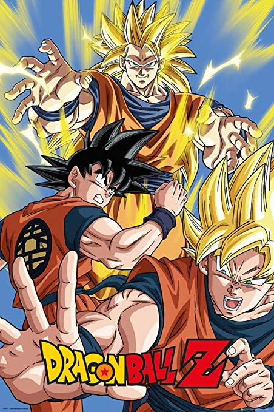
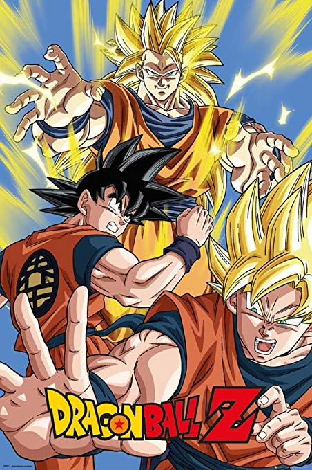
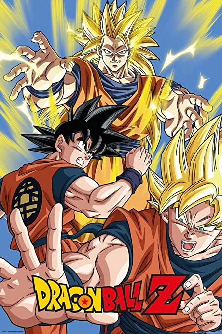
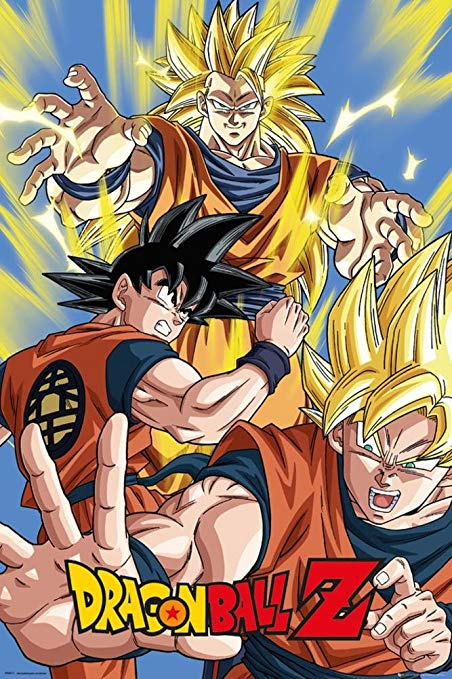
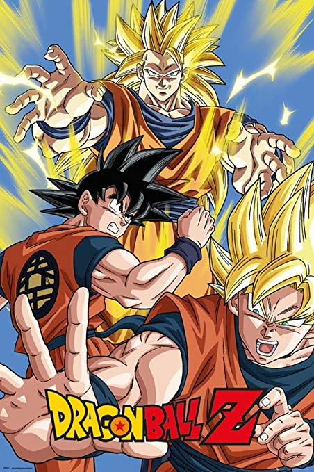

Dragon Ball Z picks up five years after the end of the Dragon Ball anime, with Goku now a young adult and father to his son, Gohan. A humanoid alien named Raditz arrives on Earth in a spacecraft and tracks down Goku, revealing to him that he is his long-lost older brother and that they are members of a near-extinct extraterrestrial warrior race called the Saiyans. The Saiyans had sent Goku "Kakarot" to Earth as an infant to conquer the planet for them, but he suffered a traumatic brain injury soon after his arrival and lost all memory of his mission, as well as his bloodthirsty Saiyan nature. Goku refuses to help Raditz continue the mission, which results in Raditz kidnapping Gohan. Goku decides to team up with his former enemy Piccolo in order to defeat Raditz and save his son, while sacrificing his own life in the process. In the afterlife, Goku trains under the ruler of the North Galaxy, King Kai, and is taught the Kaio-ken and Spirit Bomb also known as the Genki Dama techniques, before being revived by the Dragon Balls a year later in order to save the Earth from Raditz allies; Nappa and the self-proclaimed "Prince of all Saiyans", Vegeta, who arrive before Goku returns. Piccolo is killed by Nappa during the battle, along with Goku's allies Yamcha, Tien Shinhan and Chiaotzu, and both Kami and the Dragon Balls cease to exist as a result of Piccolo's death. After Goku finally arrives at the battlefield, he avenges his fallen friends by defeating Nappa with his new level of power. Vegeta kills Nappa for his failure and fights with Goku, but is ultimately defeated thanks to the efforts of Gohan and Goku's other surviving allies, Krillin and Yajirobe. At Goku's request, they spare Vegeta's life and allow him to escape Earth, with Vegeta vowing to return and destroy the planet out of revenge for his humiliation at Goku's hands.
